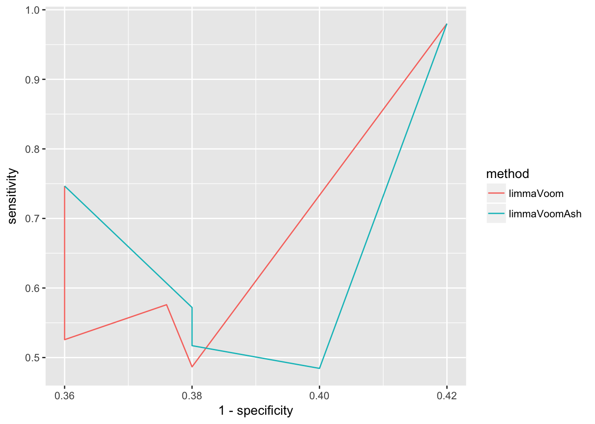
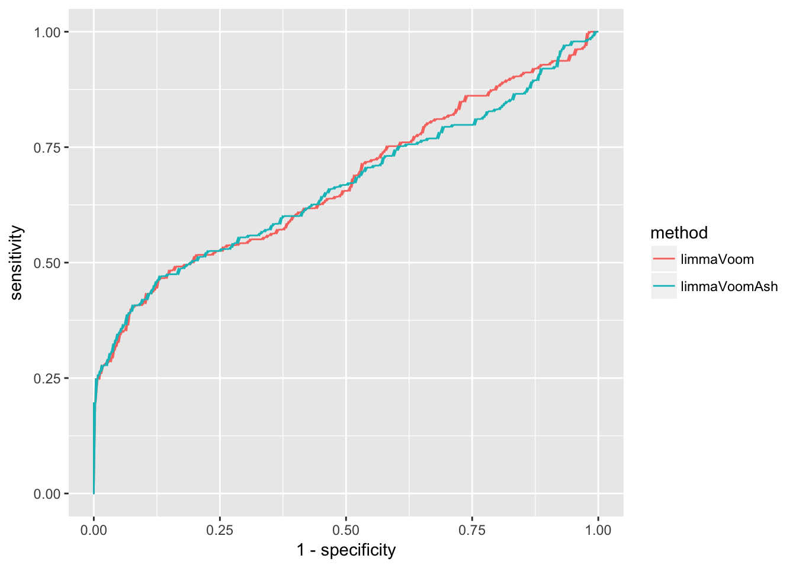

Last updated: 2017-10-19
Code version: 861184a54d0981caa0791fd3a31ddee6995fa00b
normalization:
global adjustment: observed variability in global properties is due to techncial reasons and are unrelated to the biology of the system under study. examples of global properties include differences in the toal, upper quartile, or median gene expression, proportion of differentially expressed genes, observed variance across expression levels and statistical distribution across samples (excerpt from Hicks et al. 2017 introduction paragraph 1)
issue with single-cell data, given two cell clusters, there’s significant variability between cells that are part due to the biological system under study and part due to techncial artificats, hence the methods that focus on global adjustment often do not work well? recently, some methods are proposed to perfrom local adjustment: normalizing within cell groups or normalizing with gene groups.
local adjustment
differential testing: power of the methods
We focus on calibration and power when comparing performances of the different methods.
We say that a method is well-calibrated if for all genes identified as significant at a given cut-off, most of the genes are true effects. Take s-value for an example, of all genes assigned a s-value < .05, we would expect that 95 percent of the genes are truly differently expressed and correctly signed. Take q-value for an example, of all genes assigned a q-value < .05, we would expect that 95% of the genes are truly differently expressed (though not necessary correctly signed) in a well-calibrated method.
We say that a method performs well in power if the method is able to differentiate between null and non-null genes (in datasets that contain both null and non-null genes). Generally speaking, a method that performs in power returns more significant calls among non-null genes than among null genes.
The common approach to evaluate power is computing area under the curve of sensitivty versus specificity (ROC curve). In a ROC curve, the true positive rate (sensitivity) is plotted as a function of the false positive rate (1-specificity). We say tht a method is well-performed if true positive rate is consistently higher than false positive rate at different thresholds of false positive rate.
Below I make a simulation data to demonstrate the calculations of true positive rate and false positive rate.
library(ashbun)
# load iPSC raw counts
library(singleCellRNASeqHumanTungiPSC)Loading required package: BiobaseLoading required package: BiocGenericsLoading required package: parallel
Attaching package: 'BiocGenerics'The following objects are masked from 'package:parallel':
clusterApply, clusterApplyLB, clusterCall, clusterEvalQ,
clusterExport, clusterMap, parApply, parCapply, parLapply,
parLapplyLB, parRapply, parSapply, parSapplyLBThe following objects are masked from 'package:stats':
IQR, mad, sd, var, xtabsThe following objects are masked from 'package:base':
anyDuplicated, append, as.data.frame, cbind, colMeans,
colnames, colSums, do.call, duplicated, eval, evalq, Filter,
Find, get, grep, grepl, intersect, is.unsorted, lapply,
lengths, Map, mapply, match, mget, order, paste, pmax,
pmax.int, pmin, pmin.int, Position, rank, rbind, Reduce,
rowMeans, rownames, rowSums, sapply, setdiff, sort, table,
tapply, union, unique, unsplit, which, which.max, which.minWelcome to Bioconductor
Vignettes contain introductory material; view with
'browseVignettes()'. To cite Bioconductor, see
'citation("Biobase")', and for packages 'citation("pkgname")'.data <- get(data("HumanTungiPSC"))
data_sub <- exprs(data)[,pData(data)$individual == "NA19239"]
# generate a simulated data with bignormal prior
set.seed(999)
simdata_list <- simulationWrapper(data_sub, Nsim = 1,
Ngenes = 500,
Nsamples = 30,
sample_method = "all_genes",
pi0 = .5,
beta_args = args.big_normal(betapi = 1,
betamu = 0, betasd = .8))
# fitting limmaVoom
results.limmaVoom <- ashbun::methodWrapper.limmaVoom(counts = simdata_list[[1]]$counts,
condition = simdata_list[[1]]$condition)Warning: package 'limma' was built under R version 3.4.2# fitting ash
library(ashr)
results.limmaVoomAsh <- ash(results.limmaVoom$betahat,
results.limmaVoom$sebetahat)
# compute ROC curve
roc.data <- data.frame(nonnull = 1- simdata_list[[1]]$is_nullgene,
pvalue.limmaVoom = results.limmaVoom$pvalue,
lfsr.limmaVoomAsh = results.limmaVoomAsh$result$lfsr)
# true positive rate and false positive rate
roc.data_limmaVoom <-
data.frame(method = "limmaVoom",
cutoff = quantile(roc.data$pvalue.limmaVoom, prob = c(.1, .3, .5, .7, .9)))
for (index in 1:length(roc.data_limmaVoom$cutoff)) {
cutoff <- roc.data_limmaVoom$cutoff[index]
roc.data_limmaVoom$sensitivity[index] <-
with(roc.data, sum(nonnull == 1 & pvalue.limmaVoom < cutoff)/sum(pvalue.limmaVoom < cutoff))
roc.data_limmaVoom$specificity[index] <-
with(roc.data, sum(nonnull == 0 & pvalue.limmaVoom > cutoff)/sum(pvalue.limmaVoom > cutoff))
}
roc.data_limmaVoomAsh <-
data.frame(method = "limmaVoomAsh",
cutoff = quantile(roc.data$lfsr.limmaVoomAsh, prob = c(.1, .3, .5, .7, .9)))
for (index in 1:length(roc.data_limmaVoomAsh$cutoff)) {
cutoff <- roc.data_limmaVoomAsh$cutoff[index]
roc.data_limmaVoomAsh$sensitivity[index] <-
with(roc.data, sum(nonnull == 1 & lfsr.limmaVoomAsh < cutoff)/sum(lfsr.limmaVoomAsh < cutoff))
roc.data_limmaVoomAsh$specificity[index] <-
with(roc.data, sum(nonnull == 0 & lfsr.limmaVoomAsh > cutoff)/sum(lfsr.limmaVoomAsh > cutoff))
}
library(ggplot2)
roc.plot <- rbind(roc.data_limmaVoom, roc.data_limmaVoomAsh)
ggplot(roc.plot, aes(x = 1- specificity,
y = sensitivity, col = method)) + geom_line() 
The above plot is based on 5 cutoffs of specificity and covers only a narrow range of the relationships between true positive rate and false positive rate (1-specificity). pROC package provides a convenient function to compute true positive rate as a function of false positive rate between the values of 0 to 1.
Interpretation: First, we observe that the results are well above chance occurrence - that is, the two lines are above the line wherein sensitivity equals 1-specificity, indicating that the number of true/false cases are above the same in significant and non-significant calls and hence the data is not well suited for method performance evaluation. Second, we focus on the low value range of 1-specificity - for example, at false positive rate of .25 (among non-significant calls, 25% are wrongly called as significant), true positive rate is slightly above .5 for both methods.
roc.pROC_limmaVoom <- pROC::roc(response = roc.data$nonnull,
predictor = roc.data$pvalue.limmaVoom)
roc.pROC_limmaVoomAsh <- pROC::roc(response = roc.data$nonnull,
predictor = roc.data$lfsr.limmaVoomAsh)
roc.plot_pROC <- rbind(
data.frame(method = "limmaVoom",
sensitivity = roc.pROC_limmaVoom$sensitivities,
specificity = roc.pROC_limmaVoom$specificities),
data.frame(method = "limmaVoomAsh",
sensitivity = roc.pROC_limmaVoomAsh$sensitivities,
specificity = roc.pROC_limmaVoomAsh$specificities) )
library(ggplot2)
ggplot(roc.plot_pROC, aes(x = 1- specificity,
y = sensitivity, col = method)) + geom_line() 
List the value of true positive rate at false positive rate of .05.
foo <- subset(roc.plot_pROC, sensitivity < .05)
foo[order(foo$sensitivity, decreasing = TRUE), ] method sensitivity specificity
489 limmaVoom 0.046218487 1
989 limmaVoomAsh 0.046218487 1
490 limmaVoom 0.042016807 1
990 limmaVoomAsh 0.042016807 1
491 limmaVoom 0.037815126 1
991 limmaVoomAsh 0.037815126 1
492 limmaVoom 0.033613445 1
992 limmaVoomAsh 0.033613445 1
493 limmaVoom 0.029411765 1
993 limmaVoomAsh 0.029411765 1
494 limmaVoom 0.025210084 1
994 limmaVoomAsh 0.025210084 1
495 limmaVoom 0.021008403 1
995 limmaVoomAsh 0.021008403 1
496 limmaVoom 0.016806723 1
996 limmaVoomAsh 0.016806723 1
497 limmaVoom 0.012605042 1
997 limmaVoomAsh 0.012605042 1
498 limmaVoom 0.008403361 1
998 limmaVoomAsh 0.008403361 1
499 limmaVoom 0.004201681 1
999 limmaVoomAsh 0.004201681 1
500 limmaVoom 0.000000000 1
1000 limmaVoomAsh 0.000000000 1This R Markdown site was created with workflowr